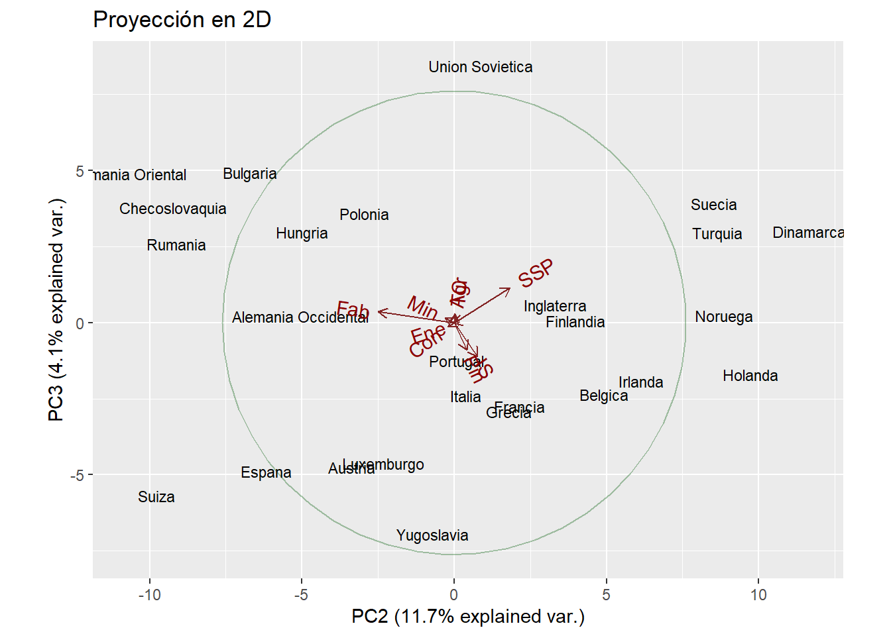

Entrega 5
Considera los datos “europa.dat” que están disponibles en Aula Digital. Los datos corresponden a los porcentajes de población empleados en diferentes actividades económicas en Europa para el año 1979. Las variables consideradas son:
Agricultura, Minas, Fábricas, Suministro Eléctrico, Construcción, Industrias de Servicio, Finanzas, Servicios Sociales y Personales y, Transporte y Comunicaciones.
Utiliza el método de componentes principales para reducir el número de variables, y tratar de determinar grupos de países con comportamientos semejantes en la distribución de su fuerza de trabajo. En este caso, usa la matriz de covarianza para el cálculo de las componentes principales, ya que todos los datos están medidos en la misma escala (porcentaje de la población) y por las caractersticas de los datos, no parece una buena idea considerarlos todos de igual manera.
En primer lugar procedemos a cargar nuestros datos:
Agr Min Fab Ene Con IS Fin SSP TC
Belgica 3.3 0.9 27.6 0.9 8.2 19.1 6.2 26.6 7.2
Dinamarca 9.2 0.1 21.8 0.6 8.3 14.6 6.5 32.2 7.1
Francia 10.8 0.8 27.5 0.9 8.9 16.8 6.0 22.6 5.7
Alemania Occidental 6.7 1.3 35.8 0.9 7.3 14.4 5.0 22.3 6.1
Irlanda 23.2 1.0 20.7 1.3 7.5 16.8 2.8 20.8 6.1
Italia 15.9 0.6 27.6 0.5 10.0 18.1 1.6 20.1 5.7
Luxemburgo 7.7 3.1 30.8 0.8 9.2 18.5 4.6 19.2 6.2
Holanda 6.3 0.1 22.5 1.0 9.9 18.0 6.8 28.5 6.8
Inglaterra 2.7 1.4 30.2 1.4 6.9 16.9 5.7 28.3 6.4
Austria 12.7 1.1 30.2 1.4 9.0 16.8 4.9 16.8 7.0
Finlandia 13.0 0.4 25.9 1.3 7.4 14.7 5.5 24.3 7.6
Grecia 41.4 0.6 17.6 0.6 8.1 11.5 2.4 11.0 6.7
Noruega 9.0 0.5 22.4 0.8 8.6 16.9 4.7 27.6 9.4
Portugal 27.8 0.3 24.5 0.6 8.4 13.3 2.7 16.7 5.7
Espana 22.9 0.8 28.5 0.7 11.5 9.7 8.5 11.8 5.5
Suecia 6.1 0.4 25.9 0.8 7.2 14.4 6.0 32.4 6.8
Suiza 7.7 0.2 37.8 0.8 9.5 17.5 5.3 15.4 5.7
Turquia 66.8 0.7 7.9 0.1 2.8 5.2 1.1 11.9 3.2
Bulgaria 23.6 1.9 32.3 0.6 7.9 8.0 0.7 18.2 6.7
Checoslovaquia 16.5 2.9 35.5 1.2 8.7 9.2 0.9 17.9 7.0
Alemania Oriental 4.2 2.9 41.2 1.3 7.6 11.2 1.2 22.1 8.4
Hungria 21.7 3.1 29.6 1.9 8.2 9.4 0.9 17.2 8.0
Polonia 31.1 2.5 25.7 0.9 8.4 7.5 0.9 16.1 6.9
Rumania 34.7 2.1 30.1 0.6 8.7 5.9 1.3 11.7 5.0
Union Sovietica 23.7 1.4 25.8 0.6 9.2 6.1 0.5 23.6 9.3
Yugoslavia 48.7 1.5 16.8 1.1 4.9 6.4 11.3 5.3 4.0Creo que lo anterior no es correcto. Si os fijáis en el enunciado pone que se tiene que usar el PCA de covarianzas, no el de correlaciones. Con esta función “princomp()” puedes especificar si quieres usar la matriz de correlaciones (corr = TRUE) o la matriz de covarianzas (cor=FALSE) y los resultados en el caso de usar la matriz de covarianzas (LA QUE PIDE EL ENUNCIADO) coinciden con los de la función que hemos intentado usar antes pero para “scale = FALSE”.
Propongo proceder así, en vernos podemos discutirlo más en detalle:
Call:
princomp(x = europa[, 1:9], cor = FALSE)
Standard deviations:
Comp.1 Comp.2 Comp.3 Comp.4 Comp.5 Comp.6
17.08176356 6.48234700 3.82393204 2.32861792 1.53278255 1.00289626
Comp.7 Comp.8 Comp.9
0.63612956 0.24985891 0.04287707
9 variables and 26 observations.- Hacemos un summary y vemos cuáles son los valores propios, la varianza explicada por cada componente y la varianza acumulada.
El problema (o no, no lo sé del todo) con la variabilidad acumulada es que prácticamente toda la acumula la primera componente principal y que con únicamente extenderla a 2 componentes principales ya abarcamos másdel 90% de la variabilidad, lo que en teoría debería de ser bueno.
Lo que pasa es que creo que hay ciertos outliers que hacen que se vayan de madre los números y que realmente deberíamos quizás de excluir esos países y hacer el análisis sin tenerlos en cuenta (Turquía, Yugoslavia, los vimos en el análisis incorrecto que intentamos hacer al principio, de eso sí que podemos fiarnos).
Importance of components:
Comp.1 Comp.2 Comp.3 Comp.4 Comp.5
Standard deviation 17.0817636 6.4823470 3.82393204 2.32861792 1.532782553
Proportion of Variance 0.8157836 0.1174827 0.04088179 0.01516024 0.006568567
Cumulative Proportion 0.8157836 0.9332663 0.97414811 0.98930835 0.995876918
Comp.6 Comp.7 Comp.8 Comp.9
Standard deviation 1.002896265 0.63612956 0.2498589145 4.287707e-02
Proportion of Variance 0.002812041 0.00113136 0.0001745417 5.139960e-06
Cumulative Proportion 0.998688959 0.99982032 0.9999948600 1.000000e+00Podemos complementar de forma más visual la aportación de variabilidad que refleja cada una de las componentes con un gráfico. Esto debería de sugerirnos cuántos componentes retener.
- Examinar las cargas de los componentes principales para entender cómo cada variable original contribuye a cada componente. Esto nos debería de ser de ayuda para interpretar el significado de los componentes.
Loadings:
Comp.1 Comp.2 Comp.3 Comp.4 Comp.5 Comp.6 Comp.7 Comp.8 Comp.9
Agr 0.892 0.118 0.180 0.153 0.335
Min -0.456 -0.766 0.290 0.324
Fab -0.271 -0.770 0.185 0.336 0.201 0.162 0.337
Ene -0.231 -0.909 0.340
Con -0.724 0.558 -0.194 0.325
IS -0.192 0.234 -0.580 0.608 0.266 0.104 0.337
Fin 0.130 -0.470 -0.781 0.121 0.123 0.334
SSP -0.298 0.567 0.598 0.236 0.248 0.332
TC 0.159 -0.435 -0.546 0.567 0.224 0.334
Comp.1 Comp.2 Comp.3 Comp.4 Comp.5 Comp.6 Comp.7 Comp.8 Comp.9
SS loadings 1.000 1.000 1.000 1.000 1.000 1.000 1.000 1.000 1.000
Proportion Var 0.111 0.111 0.111 0.111 0.111 0.111 0.111 0.111 0.111
Cumulative Var 0.111 0.222 0.333 0.444 0.556 0.667 0.778 0.889 1.000- Hacer un biplot para visualizar simultáneamente las cargas y los scores de los componentes principales. Básicamente hacer el gráfico redondito con el círculo.
Esto debería de proporcionar una visión clara de cómo se relacionan las variables y los países en el espacio de las CP1 y CP2
Análisis de los Scores: Revisa los scores de los componentes principales para ver cómo cada observación (país) se posiciona en los componentes principales seleccionados. Esto es útil para identificar patrones o agrupaciones.
Comp.1 Comp.2 Comp.3 Comp.4 Comp.5
Belgica -17.516687 4.9262285 -2.3552809 0.1940007 0.4907275
Dinamarca -11.496688 11.6617664 3.0020283 -2.5328564 -0.2620503
Francia -9.128686 2.1682821 -2.7503057 -0.1289183 0.3735587
Alemania Occidental -14.393424 -5.0474938 0.2056895 -1.2143729 2.5785719
Irlanda 4.458174 6.1315650 -1.9240008 3.4809060 0.3480591
Italia -4.026684 0.3888953 -2.4058619 4.8100625 -0.2469394
Comp.6 Comp.7 Comp.8 Comp.9
Belgica -0.5872563 0.02747862 0.26151251 -0.008040795
Dinamarca 1.0001427 -0.16185051 0.11322147 0.098177832
Francia 0.7406204 -0.44855421 -0.07200325 -0.002822468
Alemania Occidental 0.2612405 0.38250268 0.11444269 -0.043957458
Irlanda -0.5398972 -0.35750610 -0.42087184 0.072290598
Italia 1.5020677 -0.24928213 0.05164591 0.034174567
PROPUESTA: eliminar yugoslavia y turquía y ver qué pasa
Call:
princomp(x = europa_sin_tur_yug[, 1:9], cor = FALSE)
Standard deviations:
Comp.1 Comp.2 Comp.3 Comp.4 Comp.5 Comp.6
10.74681779 6.08841336 3.64871212 1.85565439 1.17576627 0.78406429
Comp.7 Comp.8 Comp.9
0.63400877 0.23901080 0.03827316
9 variables and 23 observations. Pais Agr Min Fab Ene Con IS Fin SSP
Belgica Belgica 3.3 0.9 27.6 0.9 8.2 19.1 6.2 26.6
Dinamarca Dinamarca 9.2 0.1 21.8 0.6 8.3 14.6 6.5 32.2
Francia Francia 10.8 0.8 27.5 0.9 8.9 16.8 6.0 22.6
Alemania Occidental Alemania Occidental 6.7 1.3 35.8 0.9 7.3 14.4 5.0 22.3
Irlanda Irlanda 23.2 1.0 20.7 1.3 7.5 16.8 2.8 20.8
Italia Italia 15.9 0.6 27.6 0.5 10.0 18.1 1.6 20.1
Luxemburgo Luxemburgo 7.7 3.1 30.8 0.8 9.2 18.5 4.6 19.2
Holanda Holanda 6.3 0.1 22.5 1.0 9.9 18.0 6.8 28.5
Inglaterra Inglaterra 2.7 1.4 30.2 1.4 6.9 16.9 5.7 28.3
Austria Austria 12.7 1.1 30.2 1.4 9.0 16.8 4.9 16.8
Finlandia Finlandia 13.0 0.4 25.9 1.3 7.4 14.7 5.5 24.3
Noruega Noruega 9.0 0.5 22.4 0.8 8.6 16.9 4.7 27.6
Portugal Portugal 27.8 0.3 24.5 0.6 8.4 13.3 2.7 16.7
Espana Espana 22.9 0.8 28.5 0.7 11.5 9.7 8.5 11.8
Suecia Suecia 6.1 0.4 25.9 0.8 7.2 14.4 6.0 32.4
Suiza Suiza 7.7 0.2 37.8 0.8 9.5 17.5 5.3 15.4
Bulgaria Bulgaria 23.6 1.9 32.3 0.6 7.9 8.0 0.7 18.2
Checoslovaquia Checoslovaquia 16.5 2.9 35.5 1.2 8.7 9.2 0.9 17.9
Alemania Oriental Alemania Oriental 4.2 2.9 41.2 1.3 7.6 11.2 1.2 22.1
Hungria Hungria 21.7 3.1 29.6 1.9 8.2 9.4 0.9 17.2
Polonia Polonia 31.1 2.5 25.7 0.9 8.4 7.5 0.9 16.1
Rumania Rumania 34.7 2.1 30.1 0.6 8.7 5.9 1.3 11.7
Union Sovietica Union Sovietica 23.7 1.4 25.8 0.6 9.2 6.1 0.5 23.6
TC
Belgica 7.2
Dinamarca 7.1
Francia 5.7
Alemania Occidental 6.1
Irlanda 6.1
Italia 5.7
Luxemburgo 6.2
Holanda 6.8
Inglaterra 6.4
Austria 7.0
Finlandia 7.6
Noruega 9.4
Portugal 5.7
Espana 5.5
Suecia 6.8
Suiza 5.7
Bulgaria 6.7
Checoslovaquia 7.0
Alemania Oriental 8.4
Hungria 8.0
Polonia 6.9
Rumania 5.0
Union Sovietica 9.3
Loadings:
Comp.1 Comp.2 Comp.3 Comp.4 Comp.5 Comp.6 Comp.7 Comp.8 Comp.9
Agr 0.848 0.258 0.104 0.278 0.329
Min 0.135 -0.248 -0.500 -0.682 0.291 0.322
Fab -0.826 0.232 0.330 0.138 0.114 0.333
Ene -0.291 -0.881 0.360
Con -0.141 -0.216 -0.384 0.738 -0.348 -0.100 0.332
IS -0.298 -0.676 0.524 0.191 0.123 0.329
Fin -0.135 -0.290 -0.795 0.216 -0.242 0.116 0.170 0.334
SSP -0.414 0.476 0.586 0.334 0.167 0.327
TC 0.181 -0.635 0.607 0.260 0.331
Comp.1 Comp.2 Comp.3 Comp.4 Comp.5 Comp.6 Comp.7 Comp.8 Comp.9
SS loadings 1.000 1.000 1.000 1.000 1.000 1.000 1.000 1.000 1.000
Proportion Var 0.111 0.111 0.111 0.111 0.111 0.111 0.111 0.111 0.111
Cumulative Var 0.111 0.222 0.333 0.444 0.556 0.667 0.778 0.889 1.000